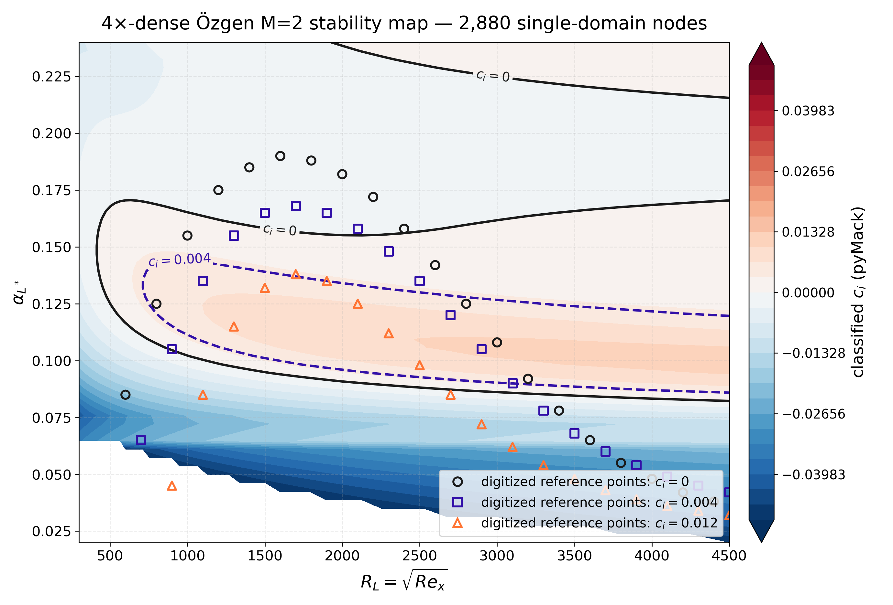

15 July 2026
pyMack is an MIT licensed Python package for local
linear stability theory (LST) of compressible and hypersonic boundary
layers. It combines base flow generation, temporal and spatial
eigenvalue analysis, neutral curves, N-factor integration, and a judged
validation corpus behind a pip installed facade. The implementation uses
NumPy and SciPy on CPUs and keeps numerical diagnostics and provenance
beside the computed results.
Local LST connects a laminar base flow to disturbance growth, neutral boundaries, and transition correlations (Mack 1984; Schmid and Henningson 2001). Reproducing a published case can nevertheless require separate base flow, eigensolver, mode selection, plotting, and N-factor programs. Differences in scaling, transport laws, boundary conditions, domain height, and spectrum filters can then remain implicit.
pyMack provides one inspectable local workflow:
import pymack as pm
base = pm.flat_plate(Ma=6.0)
temporal = pm.temporal_mode(base, alpha=0.174, Re=5500)
spatial = pm.spatial_mode(base, omega=temporal.omega.real, Re=5500)The package is intended for researchers who need local compressible or hypersonic eigenvalues, stability maps, and N-factors without a specialized computing system. It does not implement parabolized stability equations, global stability, or direct numerical simulation.
Chebyshev collocation discretizes the disturbance equations, following the spectral accuracy model of Orszag (1971). Temporal solvers cover two and three dimensional compressible disturbances, while the spatial solver linearizes the quadratic eigenvalue problem. Users can request complete spectra or selected modes, run structured parameter sweeps, trace neutral boundaries, and integrate spatial growth into N-factors.
Mode selection combines phase speed windows with scaled residual and freestream decay tests. Batch results retain failure codes, solver settings, and reproducibility metadata. This design makes rejected continuous spectrum or truncated domain candidates visible instead of silently selecting the nearest eigenvalue.
The committed success matrix contains 37/37 judged validation cases. Its unchanged judges classify 16 as agrees, 15 as acceptable, 3 as disagrees, and 3 as pending. These classes are the recorded scientific outcomes, not a claim that every case agrees with the literature. The set spans the Orszag spectrum (Orszag 1971), Malik’s cooled wall anchors (Malik 1990), Ma and Zhong’s spatial branches (Ma and Zhong 2003), and the Mach range maps of Özgen and Kırcalı (Özgen and Kırcalı 2008). Known first mode disagreements remain in the matrix.
A separate provenance census asks whether each committed verdict can be regenerated. It found 30 regeneration proven cases, 1 repaired and regenerated case, 1 small numerical drift, and 5 deferred cases. The repaired Mach 5.8 record now replays exactly. The Orszag drift was 3.24 × 10−8. The deferred set comprises one costly exact shooting sweep, two driver walls, one case lacking required dimensional input, and one run stopped at its 1,800 s wall. The Mach 4.5 and Mach 5.8 amendments preserve the mislabeled historical records and document the ratified corrections. The result is therefore judges plus provenance census, not “all 37 live regenerable.”
Committed measurements on a 64 logical core Windows workstation record the same physical formulation before and after CPU engineering. The deployed serial full QZ path took 1,598.7 s for a 720 node Özgen overlay. A tuned 24 worker, eigenvalues only path took 46.70 s, a 34.23 fold reduction, with identical classification for 720/720 nodes. The serial row denotes one process on that workstation; it is not a proxy for a small host. For the 1,305 solve Mach 10 Figure 10.4 workload, point parallel execution reduced 9,717.1 s to 1,110.5 s with the same nine station verdict.
Figure 1 demonstrates capacity rather than a new physical model. A 2,880 node map, four times the original sampling, took 399.80 s with full QZ. This is one quarter of the deployed 720 node wall time. Independent re-solves of 24 newly added grid nodes were bitwise identical on the full QZ path. The eigenvalues only route completed the same 2,880 node map in 169.47 s.

COSAL is a finite difference transition code (Malik 1982), while LASTRAC supports
LST and parabolized stability equations through a software request (Chang 2004).
Krypton addresses linear and nonlinear parabolized stability equations
in transonic curvilinear flows (Lacombe and Hickey 2022).
BROADCAST couples high order compressible flow simulation with global
stability and sensitivity analysis (Poulain et al. 2023).
LinStab2D provides MATLAB stability and resolvent analysis for general
two dimensional compressible flows (Martini and Schmidt 2024). The
Flow Physics and Simulation suite collects separate flow and stability
codes, including direct and shooting formulations with curvature and
nonparallel effects (Flow
Physics and Simulation 2026). pyMack is
differentiated by its open local compressible and hypersonic eigenvalue
and N-factor workflow, pip facade, and committed validation corpus.
pyMack is available under the MIT license from its
public source repository and archived release (Senkardesler 2026). Installation,
examples, API documentation, tests, validation verdicts, and provenance
records are maintained with the source. The runtime path requires
Python, NumPy, and SciPy and does not require specialized hardware.
Development was orchestrated by the author using multiple frontier AI systems: Claude (Fable 5) for orchestration and manuscript drafting, GPT-5.6 (Codex CLI) for implementation lanes, GPT-5.6 Pro for research discussions, and Grok 4.5 and Claude Opus 4.x for adversarial review lanes, during June and July 2026. The author set the scientific questions and acceptance contracts, ratified every design and validation decision, and reviewed and validated all outputs. All validation verdicts derive from committed, provenance-tracked artifacts.
The author thanks the researchers whose benchmark tables, curves, and numerical methods make independent verification possible.